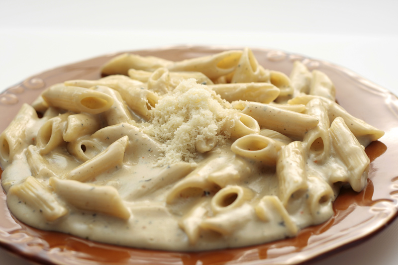

Penne Quattro Formaggi

Description
Penne Quattro Formaggi is a luxurious and comforting pasta dish celebrated for its rich, creamy texture and deep, nuanced flavors. This classic Italian recipe brings together four distinct types of cheese, usually including a blend of Parmesan, Gorgonzola, Fontina, and Mozzarella, although variations exist depending on regional and personal preferences. The cheeses are melted into a smooth sauce, often with a base of heavy cream, butter, or béchamel, to create a velvety coating for the penne pasta. The choice of penne, with its hollow centers and ridges, is particularly adept at capturing and holding onto the thick cheese sauce, ensuring that each bite is as flavorful as the last.
Beyond the sumptuous cheese sauce, the dish can be customized with additions like garlic, pepper, and nutmeg, which enhance the overall depth of flavor without overpowering the delicate balance of the cheeses. Penne Quattro Formaggi is a testament to the simplicity of Italian cooking, showcasing how a few quality ingredients, when combined with care and expertise, can create a dish that is both comforting and sophisticated. It's a perfect choice for those seeking the warmth of home-cooked comfort food, as well as food enthusiasts looking to explore the rich tapestry of Italian cuisine.
Ingredients
- 14 oz of Penne Pasta
- 1/2 cup of grated Parmesan
- 1/2 cup of cumbled Gorgonzola
- 1/2 cup of shredded Fontina
- 1/2 cup of shredded Mozzarella
- 1 cup of Heavy cream
- 2 tablesppons of Butter
- Salt and Pepper
Steps
- Cook the Pasta: Bring a large pot of salted water to a boil. Add the penne pasta and cook according to the package instructions until al dente. Drain the pasta and set aside, reserving a little pasta water.
- Prepare the Cheese Sauce: In a large pan, melt the butter over medium heat. Add the minced garlic (if using) and sauté for about 1 minute until fragrant. Lower the heat and add the heavy cream, stirring well. Gradually add the Parmesan, Gorgonzola, Fontina, and Mozzarella cheeses to the cream, stirring constantly until the cheeses melt and the sauce is smooth. Season with salt, pepper, and a pinch of nutmeg (if using). Adjust the consistency of the sauce with a little pasta water if it's too thick.
- Combine Pasta and Sauce: Add the cooked penne pasta to the sauce, tossing well to ensure that all the pasta is evenly coated. If the sauce is too thick, add a bit more pasta water to reach the desired consistency. The sauce should be creamy and cling to the pasta without being runny.
- Final Touches: Taste and adjust the seasoning with more salt and pepper if needed. Serve the pasta hot, garnished with chopped parsley.